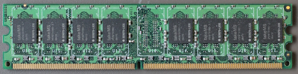

Licenca
To delo je na voljo pod pogoji slovenske licence Creative Commons 2.5:
priznanje avtorstva - nekomercialno - deljenje pod enakimi pogoji.
Celotna licenca je na voljo na spletu na naslovu http://creativecommons.org/licenses/by-nc-sa/2.5/si/. V skladu s to licenco je dovoljeno vsakemu uporabniku delo razmnoževati, distribuirati, javno priobčevati, dajati v najem in tudi predelovati, vendar samo v nekomercialne namene in ob pogoju, da navede avtorja oziroma avtorje in izdajatelja tega dela. Če uporabnik delo predela, kar pomeni, da ga spremeni, preoblikuje, prevede ali uporabi to delo v svojem delu, lahko predelavo dela ponudi na voljo le pod pogoji, ki so enaki pogojem iz te licence oziroma pod enako licenco.

Glavni pomnilnik
Glavni pomnilnik današnjih računalnikov je narejen tako, da je čas za dostop do poljubne pomnilniške besede enak in ni odvisen od prejšnjih pomnilniških dostopov. Za hitrosti izvajanja programov tako ni pomembno, kje v glavnem pomnilniku in v kakšnem zaporedju so zapisani ukazi in podatki.
Pomnilniku, pri katerem je hitrost dostopa do podatkov neodvisna od lokacije, kjer so podatki shranjeni, in zaporedja, v katerem do podatkov dostopamo, pravimo pomnilnik z naključnim dostopom (ang. Random Access Memory, RAM).
Ta lastnost glavnega pomnilnika ni samo po sebi umevna. V 50. in 60. letih prejšnjega stoletja so računalniki npr. uporabljali rotirajoče magnetne bobne. Pri dostopu je bilo v skrajnem primeru potrebno počakati na poln obrat bobna, da se je podatek znašel pod bralno-pisalno glavo. Programerji so morali za čim večjo hitrost izvajanja programov ukaze po bobnu razvrstiti tako, da so upoštevali trajanje izvajanja ukaza in hitrost, s katero se je boben vrtel.
Danes se za izdelavo pomnilnikov z naključnim dostopom uporabljata dve tehnologiji:
- Statični RAM (SRAM): za hranjenje enega bita potrebuje 6 tranzistorjev.
- Dinamični RAM (DRAM): za hranjenje enega bita potrebuje le en tranzistor, a se shranjeni naboj hitro izgublja in je vsebino pomnilnika potrebno nenehno osveževati (brati in prebrano znova zapisati) vsakih nekaj deset milisekund.
Statični pomnilniki SRAM so bistveno dražji od dinamičnih pomnilnikov DRAM, a so zato tudi precej hitrejši in porabijo manj električne energije. Značilnost obeh tehnologij je, da ne omogočata trajnega hranjenja podatkov, saj se po odklopu napajanja shranjena informacija izgubi.
Glavni pomnilnik je danes izdelan tako, da se več pomnilniških čipov DRAM poveže v skupen modul. Takim modulom pravimo moduli DIMM (ang. Dual-in-line memory module). Vstavimo jih v matično ploščo v zato pripravljen priključek zraven centralne procesne enote.
Moduli DIMM omogočajo hkratni prenos 64 bitov med pomnilnikom in centralno procesno enoto. Hitrost modulov DIMM merimo v številu prenosov v sekundi. Tipične hitrosti modulov DIMM v letu 2015 so med 800 in 2133 milijoni prenosov v sekundi.
 Pomnilniški modul DIMM.
Pri tem je potrebno opozoriti, da v primeru, ko govorimo o glavnem pomnilniku, predpone kilo, mega, giga, tera pred enoto bajt ne predstavljajo potenc števila 1000, temveč potence števila 1024 (210). 1 kilobajt (KB) tako predstavlja 210 = 1024 bajtov in ne 1000 bajtov. 1 megabajt (MB) predstavlja 1024 · 1024 = 1 048 576 bajtov. Zmeda lahko nastane, ker se vsepovsod drugje, npr. ko navajamo kapaciteto trdih diskov, količino prenešenih podatkov preko omrežij itd. uporablja izvorni pomen teh predpon, kot smo ga spoznali že pri fiziki. 500 gigabajten disk tako lahko hrani 500 milijard bajtov in ne 500 · 1024 · 1024 · 1024 = 536 870 912 000 bajtov.
Da bi se izognili dvoumnostim, je leta 1998 organizacija International Electrotechnical Commission uvedla nove merske enote kibibajt (KiB), mebibajt (MiB), gibibajt (GiB), tebibajt (TiB) in druge, kot jih prikazuje spodnja tabela.
| Predpona |
Simbol |
Faktor |
| kibi | Ki | 210 = 10241 = 1 024 |
| mebi | Mi | 220 = 10242 = 1 048 576 |
| gibi | Gi | 230 = 10243 = 1 073 741 824 |
| tebi | Ti | 240 = 10244 = 1 099 511 627 776 |
| pebi | Pi | 250 = 10245 = 1 125 899 906 842 624 |
| exbi | Ei | 260 = 10246 = 1 152 921 504 606 846 976 |
| zebi | Zi | 270 = 10247 = 1 180 591 620 717 411 303 424 |
| yobi | Yi | 280 = 10248 = 1 208 925 819 614 629 174 706 176 |